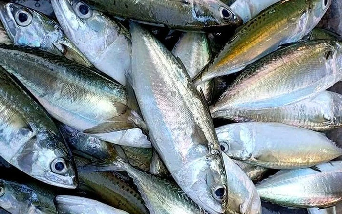
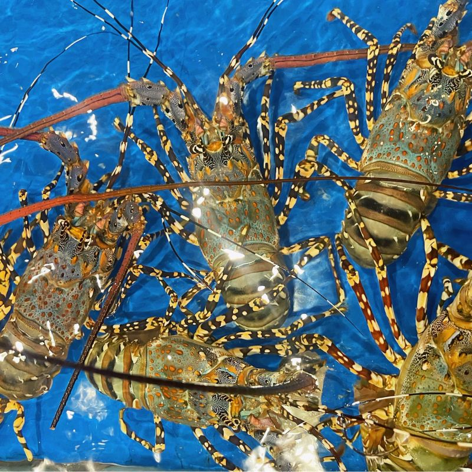
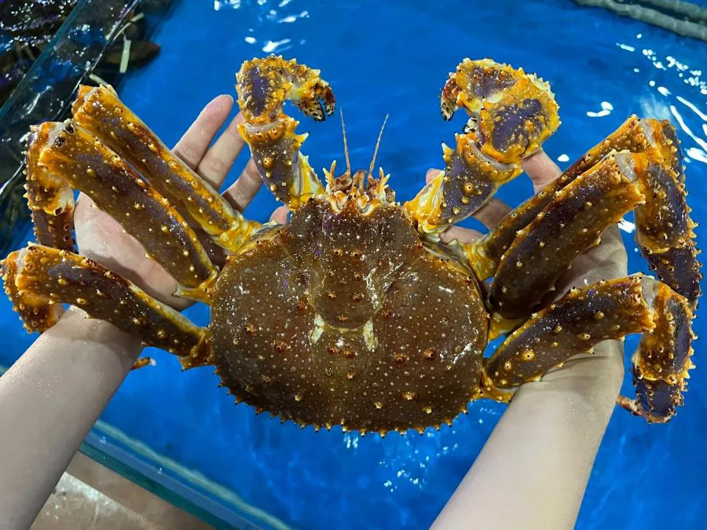
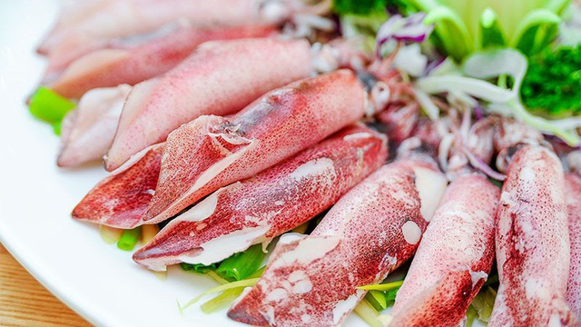
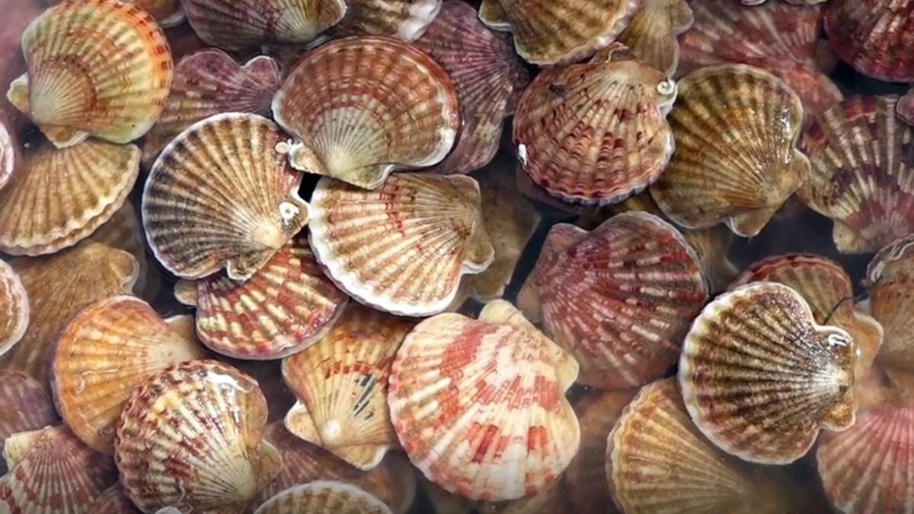
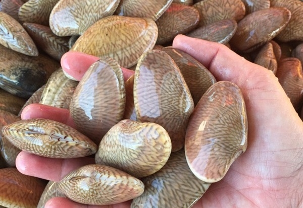
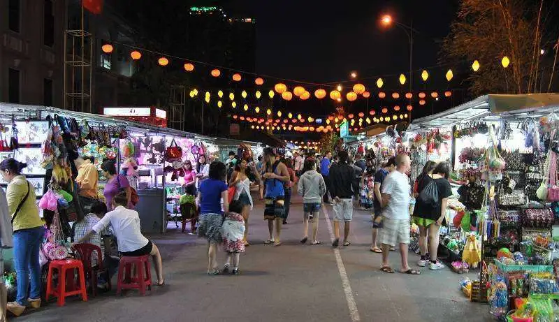
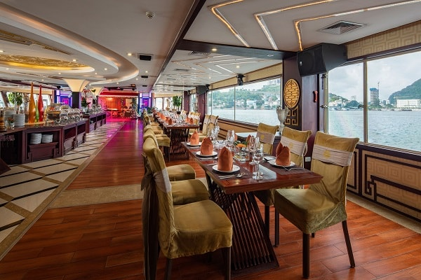
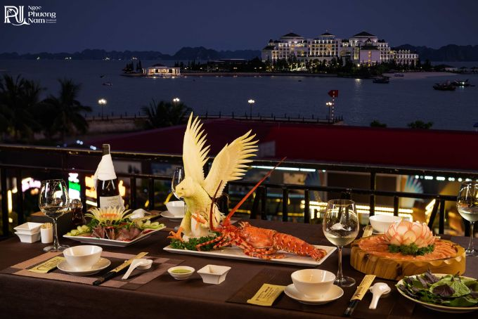

ẨM THỰC HẠ LONG
Hương vị biển cả đậm đà, đặc sản vùng miền
Hải sản tươi sống Hạ Long
Vùng biển Hạ Long với hệ sinh thái đa dạng mang đến nguồn hải sản phong phú, tươi ngon bậc nhất. Từ những loài cá, tôm, cua, mực đến các đặc sản quý hiếm như sá sùng, tu hài, hàu sữa... tất cả đều được đánh bắt tự nhiên, giữ trọn hương vị biển cả.

Cá biển tươi
Đa dạng các loại cá như cá chim, cá mú, cá hồng... đánh bắt hàng ngày

Tôm hùm
Tôm hùm tươi sống, thịt chắc ngọt, được nuôi trong lồng bè tự nhiên

Cua hoàng đế
Cua biển có thịt thơm ngon, gạch vàng béo ngậy, đặc sản của vùng biển lạnh

Mực tươi
Mực ống, mực nang tươi ngon, thịt dày, ngọt tự nhiên

Sò điệp
Sò điệp lớn, thịt trắng ngọt, có thể chế biến nhiều món ăn hấp dẫn

Nghêu, ốc
Các loại nghêu, ốc hương, ốc mỡ tươi ngon, giá cả phải chăng
Địa điểm ẩm thực nổi tiếng

Chợ đêm Hạ Long
Địa điểm lý tưởng để thưởng thức hải sản tươi sống với giá cả phải chăng, không khí nhộn nhịp về đêm.

Nhà hàng trên du thuyền
Trải nghiệm ẩm thực độc đáo ngay trên vịnh với view tuyệt đẹp, thường phục vụ các bữa tiệc hải sản.

Nhà hàng ven biển Bãi Cháy
Các nhà hàng dọc bờ biển Bãi Cháy với view biển tuyệt đẹp, menu đa dạng từ bình dân đến cao cấp.